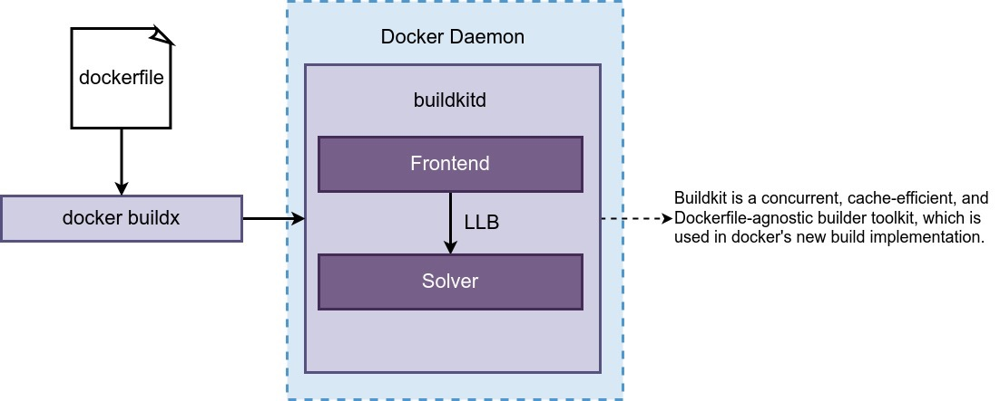
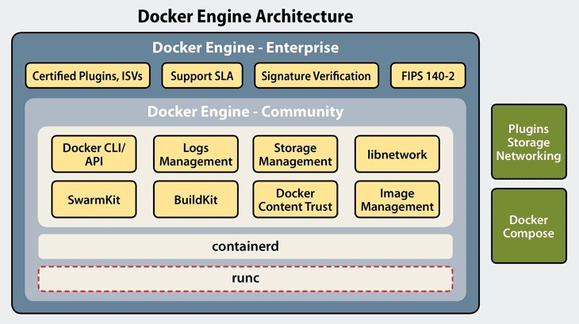
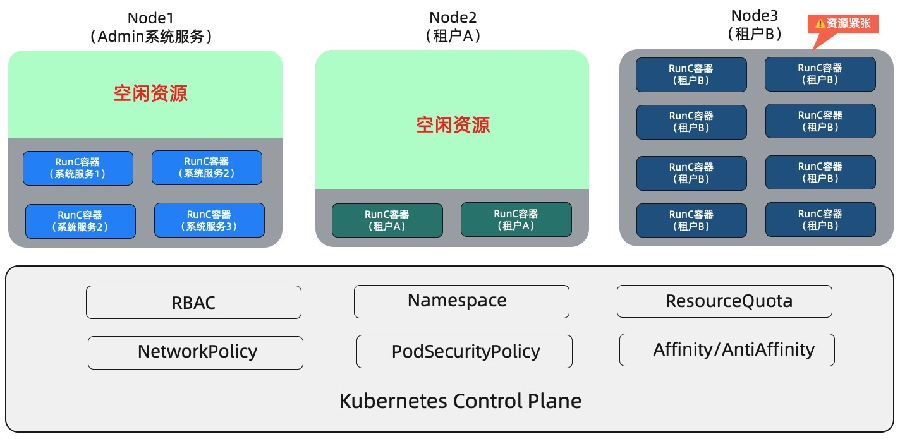
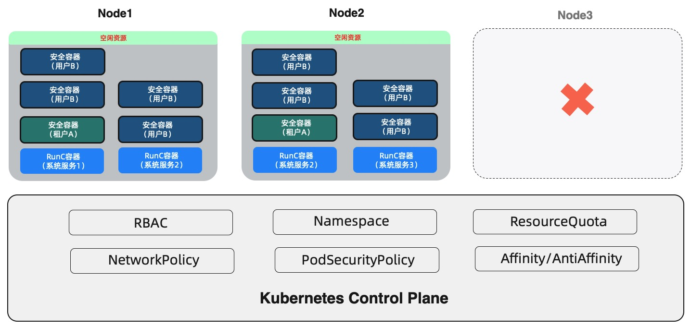
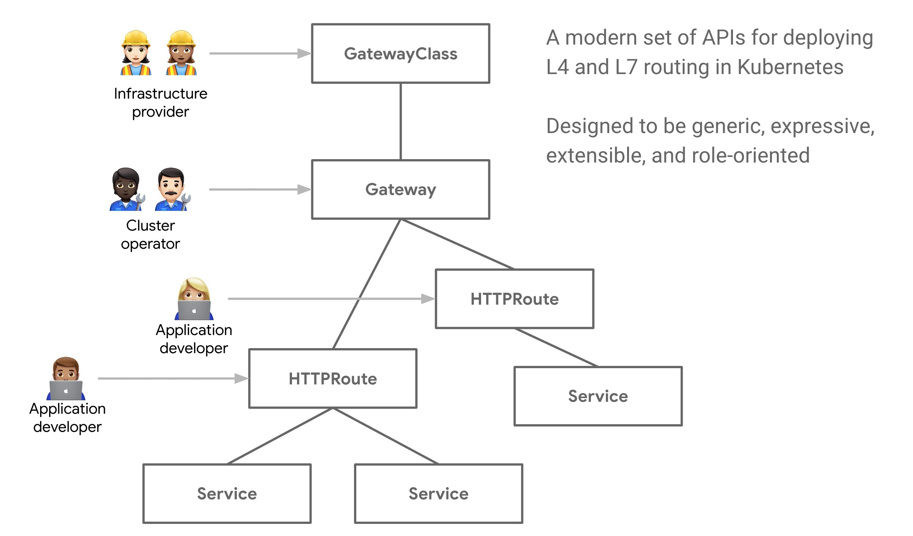

导语
在过去的2022年,降本增效几乎成为所有互联网公司的主旋律，从一个程序员的角度来讲，降本增效主要是：提高资源的使用效率、而这里的资源主要是人和机器。
机器的利用率很容易理解，程序员的角度就是优化服务的性能、同样的事情能不能使用更少的机器资源，基础平台的角度提高机器的利用率，公司的角度降低机器成本，这点程序员、基础平台和公司的最终目标是一致的。
而人的利用率三者的理解是应该是有偏差的。
程序员的角度： 我能不能花更少的时间完成当前的工作、而腾出时间休息或者做一些更有创造性的工作。
基础平台的角度：这个东西不太容易体现在给老板汇报的ppt中，不像账单那么具体，不容易出成绩。所以为了ppt中数据更好看，别说提高效率，哪怕降低一些效率，好像也是可以理解的。毕竟老板才是决定年终奖的那个。更气人的是，员工是包月的，效率低点，多花点时间就好了，这不也是侧面提高员工的利用率么。
公司的角度应该是：人和机器没必要分开看。
这里主要想看学习下Linux应用开发和部署方式的演进的过程中是如何降本增效的，看看有没有什么借鉴的经验。
TLDR
一道面试题
很早之前去某云计算的时候，最后一轮技术面[CDN开发岗]，被问到这么一个问题：
问：nginx应该开启多少个进程？
答：应该跟cpu的个数保持一致。
问：在磁盘操作较多的情况下也是这样么， bla bla bla ...
答：哦，对，应该开启更多的进程。
这个事情的本质是在不同场景下如何提高资源利用率，资源不变的情况下服务更多的请求。
使用nginx做代理的时候，开启进程数和cpu个数保持一致，是为了在epoll支持多路复用的情况下，减少进程间context switch带来的额外开销。包括配置worker_cpu_affinity也是确保一个进程始终被调度到固定的cpu，从而避免context switch带来的额外开销。
当部分请求存在较多磁盘操作时，假如仍然配置进程数和cpu个数保持一致，就会导致cpu大部分时间都在等待磁盘操作的系统调用完成，同时可能导致没有磁盘操作的请求响应耗时变高[latency]，所以为了提高cpu的利用率,同时优化响应耗时，要开启更多的进程。
当然nginx现在已经支持thread pool。
进程是计算机编程绕不开的话题，随着所谓c10k, c10m问题的出现，进程有了两个发展方向：协程、容器，与之对应的则是userspace的调度和跨系统的进程的调度。
为什么会出现协程、docker、k8s, 说白了，最终目的都是为了提高机效和人效以及如何在不损失人效的情况下提高机效。
以下主要是从程序员角度的机效和人效，以机效为主线，人效为辅线，说一说编程方式和部署的演进方式。
提高cpu的利用率
cpu虚拟化 - process vs thread (LWP)
Operating Systems: Three Easy Pieces中提到cpu通过时间片轮转(time sharing)实现了一个cpu上可以同时执行多个进程，其实从程序员的视角来说就是操作系统将一个cpu虚拟化成多个cpu，实现进程业务逻辑的时候无需考虑cpu资源的事情，每个进程都可以认为自己是独占cpu。
cpu虚拟化(多进程)提升了机效 + 人效，同样虚拟内存也是类似。
提高cpu利用率
降低理解成本
可以想象一下，如果没有这个时间片轮转的技术，一个cpu同时只能执行一个进程，那一台计算机同时执行的进程数将受到cpu个数的限制、同时cpu也难以得到充分利用。
由于创建进程需要涉及分配、回收资源，比如内存、文件、文件系统等，导致其开销比较大。因此又出现了线程的概念。
在Linux中，线程其实就是轻量级的进程，其实对于调度系统来说，进程和线程是一样的，都是对应一个task_struct结构体，而Linux实际上调度正是task_struct。
怎么理解轻量级呢？
其实进程和线程都是通过clone系统调用创建的，只是参数不同，创建线程时，会共享父线程的各种资源、比如VM、fd table等，不像进程一样拥有自己的VM、fd table等资源。所以才有了进程是资源分配的最小单位，而线程是调度的最小单位的说法。
当然值得一提的是创建进程也不是创建时就把所有的父进程的资源都copy过来，而是采用COW，确保系统可以高效的创建进程。
进程调度 - cpu scheduling
有了进程和线程，那么如何分配cpu呢？
非抢占式调度和抢占式调度
非抢占式调度 - non-preemptive scheduling
非抢占式调度就是完全依赖用户程序自行让出cpu，对程序员的要求比较高，很容易导致某个程序长时间占用cpu，导致其他程序得不到执行。
抢占式调度 - preemptive scheduling
抢占式调度则会强制让长时间执行的进程让出cpu，给予其他进程一定的运行时间。
抢占式调度让每个进程都得到了执行的机会，副作用则是产生了上下文切换的开销、同时增加内核调度系统的复杂度。 其中进程A让出cpu、保存进程A的现场[寄存器、缓存]、进程B调度到cpu、恢复进程B的现场就是所谓的上下文切换。
根据抢占发生的时机, 抢占又分为用户抢占和内核抢占。
用户抢占发生在从中断或者系统调用返回用户态时；如果一个系统调用或者中断耗时很长，就会导致其他进程长时间无法获取cpu。因此Linux系统自2.6内核开始支持内核抢占式调度。内核抢占相比用户抢占，允许从中断返回内核态时发生抢占，使高优先级的进程更及时的获取到时间片。
内核抢占的时机
When an interrupt handler exits, before returning to kernel-space
When kernel code becomes preemptible again
If a task in the kernel explicitly calls schedule()
If a task in the kernel blocks (which results in a call to schedule() )
上下文切换 - context switch overhead
正是因为Linux选择了抢占式调度、并且是内核抢占，导致进程和线程存在上下文切换(Context Switch)的开销。
同一应用的不同线程间切换，由于共享内存的缘故，避免了TLB flush，所以成本会更低一些。(进程和线程的context switch耗时)其实差距不大。
这里的提高cpu利用率并不是说top中显示的cpu利用率越高越好，而是提高user cpu time，毕竟context switch其实会提高system cpu time。
有没有办法避免Context Switch?
上下文切换分类
进程切换
内核态和用户态相互切换
中断处理
一些优化context switch overhead的措施
io多路复用
协程
spin lock、 futex、vDSO
spdk
异步非阻塞 - async no-blocking
采用async no-blocking方式取代blocking sync system call,不创建那么多进程或者线程，开启cpu affinity 。
以上主要是从充分利用cpu的立场考虑的，但实际场景中要考虑更多的因素，比如内存、磁盘，然后根据具体的场景进行取舍。
比如nginx利用event-driven architecture(epoll,multiplexing noblocking)实现了一个进程可以同时处理多个请求，使其性能远远超过了apache(one thread per request)。
然而异步的编程方式其实是不符合人类的思维习惯,因此会导致代码复杂且易出现bug。
异步编程的出现，提升了机效，但实际增加程序员的心智负担，提升机效的同时，不损失程序员的体验呢？
用户态调度 - userspace schedule
而协程则可以解决这个问题，协程让程序员可以利用同步的方式编写异步的服务(程序员可以像编写多进程的同步服务一样通过协程进行编程，同时避免context switch overhead)，将复杂的回调逻辑屏蔽在runtime中。协程将原本交给进程调度的任务交给了用户态的应用，跟操作系统的调度给程序员带来类似的体验提升，代码实现中无需关注调度细节，认为自己是独占cpu，因此协程也可以被用户态的调度。
其实挺有意思，Linux内核采用了内核抢占的调度方式，解决了非抢占式调度的任务可能长时间占用cpu的问题，但程序员无需感知调度方式；go runtime又通过支持goroutine、支持用户态的抢占式任务调度，解决了单个goroutine可能长时间占用cpu的问题，同样也是程序员透明的。当然go不支持yield，某种意义上讲其实yield相当于用户态度的schedule()。
从用户态和内核态的角度来说，golang算是用户态的非抢占式调度，毕竟goroutine是用户态实现了调度；从程序员的角度，golang又是抢占式调度，毕竟go runtime支持了抢占，写代码时无需过度关注。
而golang的runtime中的协程的底层thread又依赖内核抢占的调度方式，因此有时我们也要确保golang底层不要启动太多thread(Go gomaxprocs 调高引起调度性能损耗。
同时一个比较有意思的点、golang中的sync.Mutex底层是直接依赖futex么？ITT 2019 - Kavya Joshi - Let's talk locks!
协程这个概念本身比较模糊，甚至有人说goroutine不算协程，因为协程中有要支持yield, 争论这个意义不大，了解原理即可。
go算是完全自动化的调度，是否让出cpu完全由runtime决定，而且从Go 1.14开始支持抢占式；
lua的协程则支持手动的yield和resume,只是程序员手动调度。
关于协程的一些资料
Kavya Joshi - The Scheduler Saga
Dmitry Vyukov — Go scheduler: Implementing language with lightweight concurrency
另外一些脑暴的内容后续填坑
stackful和stackless实现的区别，libco、goroutine等实现方式、semi-coroutine
另外一些性能优化关键词 spdk/dpdk、io-uring、zero-copy、futex、DMA、sendfile、splice、cow、cpu affinity
C语言的unsafe特性致命打击了操作系统进化过程；导致mmu出现，kernel和userspace严格隔离和高成本切换，用户空间几乎彻底失去调度权，催生面向对象，又糊上GC，这些全部都是走了弯路。如果一开始就safe，后面会完全不同。
xxxxxxxxxx-- 微博上看到的观点、脑洞比较大、仅引用、不代表赞成
提高物理机的利用率
物理机 - physical machine
依靠异步调用或者协程，提高了单个应用对于cpu的利用率。但是怎么如何提高整台物理机的cpu利用率呢？
最直接的方式是直接在物理机上部署等多个应用，但是安全性怎么保证，尤其是在云上，两个应用可能属于两个不同的客户？
即便是同一客户的两个应用，也需要避免相互影响。另外不同的应用可能依赖的环境也不一样。
虚拟机 - vitual machine
因此虚拟机出现了，虚拟机的概念其实更早的时候就有了。一些虚拟机的技术相关的链接kvm、xen、hypervisor
图片摘自hardware-assisted virtualization
关于虚拟化的一些学习资料
由于虚拟机要虚拟硬件+运行操作系统，导致其overhead会比较高。那有没有办法解决这个问题呢？
容器 - cgroups namespace sandbox
Linux内核通过cgroups提供了限制进程资源使用的功能(resource 隔离)，namespace的存在则让不同进程看到不同的系统视图(view 隔离)。
以Cloud Foundry 为代表的开源 PaaS 项目开始基于cgroups、namespace在同一台虚拟机上部署多个应用。(参考自深入剖析 Kubernetes)
事实上，像 Cloud Foundry 这样的 PaaS 项目，最核心的组件就是一套应用的打包和分发机制。 Cloud Foundry 为每种主流编程语言都定义了一种打包格式，而“cf push”的作用，基本上等同于用户把应用的可执行文件和启动脚本打进一个压缩包内，上传到云上 Cloud Foundry 的存储中。接着，Cloud Foundry 会通过调度器选择一个可以运行这个应用的虚拟机，然后通知这个机器上的 Agent 把应用压缩包下载下来启动。
由于是把应用打包上传、分发、运行，那如果本地环境与云上环境(依赖库是否存在、依赖库的版本是否一致)不一致会不会导致应用执行失败？
所以经常会出现以下甩锅技巧。
在我电脑上是好的
一定是你的环境不对
docker - build once, run anywhere
所以如何解决本地环境与云上环境可能存在的不一致问题呢？
Docker的出现解决了这个问题。Docker并没有引入什么新的思想、技术，底层的技术原理[cgroups + namespace + unionfs]其实很早就存在了，但是它的出现极大优化了程序员的体验：
通过rootfs + UnionFS(overlayfs、AUFS) 解决了本地环境与云上环境不一致的问题，其实就是将环境和应用一起打包到了镜像中；
docker提供了非常友好的接口;
开发者可以随意打包、分发、运行容器
屏蔽了cgroups、namespace、UnionFS等概念，使用虚拟机一样使用容器[可登陆、可执行shell]的同时还避免了虚拟机的开销，极大的优化了程序员的开发和调试体验。
因为优化了开发者的体验、导致其在开发者中流行，开发者又反过来帮助docker完善了生态系统;
这里就先不详细说rootfs + UnionFS的概念了,感兴趣可以先看DOCKER基础技术：AUFS，后续有空填坑。
implements a union mount for other file systems. It allows files and directories of separate file systems, known as branches, to be transparently overlaid, forming a single coherent file system. Contents of directories which have the same path within the merged branches will be seen together in a single merged directory, within the new, virtual filesystem.
This allows a file system to appear as writable, but without actually allowing writes to change the file system, also known as copy-on-write
摘自UnionFS
At the bottom of the Linux system is the system kernel, and a typical Linux boot requires two File systems bootfs and rootfs.
Bootfs (boot file system) mainly contains bootloader and kernel. bootloader mainly boots the kernel. bootfs are umount after boot is successful and the kernel is loaded into memory.
So bootfs are basically the same for different Linux distributions, and rootfs are different, so different distributions can share bootfs
rootfs (root file system) 包含的就是典型 Linux 系统中的 /dev, /proc, /bin, /etc 等标准目录和文件。
AUFS的存在
优化了镜像存储大小，更易分发和存储;
把容器运行时的变更隔离在writable layer, 提供了不可变基础设施。
The major difference between a container and an image is the top writable layer. All writes to the container that add new or modify existing data are stored in this writable layer. When the container is deleted, the writable layer is also deleted. The underlying image remains unchanged.
Storage drivers are optimized for space efficiency, but (depending on the storage driver) write speeds are lower than native file system performance, especially for storage drivers that use a copy-on-write filesystem. Write-intensive applications, such as database storage, are impacted by a performance overhead, particularly if pre-existing data exists in the read-only layer.
容器的本质是一个进程(组)
rootfs + UnionFS的存在，外加cgroups + namespace提供的resource和view的隔离，就是完整的docker的底层原理。
由于容器的本质是一个进程，导致只有应用本身能在对应操作系统上跑起来，其封装成的镜像，才能在对应操作系统上跑起来。
Applications that run on docker are limited to applications that are natively supported by the host operating system.
In other words, Docker for Windows can only host Windows applications inside Docker containers, and Docker on Linux supports only Linux apps.
那么为什么我的容器既可以在linux上运行，又可以在mac上运行？
实际上，这句话其实仅适用于共享内核的容器，后面还有提到安全容器不符合这种说法。
docker的系统架构 - docker arch
最初的时候docker只有docker-cli和docker daemon，随着社区的发展、伴随着K8S及CNCF的发展壮大，docker daemon被拆分成docker deamon、containerd、container-shim、runc。
docker daemon
上图中的docker为docker daemon， docker-daemon负责与docker命令行交互，通过gRPC通讯。
docker build命令的最终执行者，依赖BuildKit。
docker run、docker pull等命令则会通过gRPC转发给containerd，由containerd最终执行。

图片摘自buildkit
containerd - CNCF
为了促进K8S生态的繁荣以及避免对docker的过度依赖，K8S为了允许不同组织和开发者开发自己的container runtime实现，而对应的container runtime实现仅需实现K8S定义的container runtime interface(CRI)即可被K8S调用。CRI的出现让docker在K8S成为一个可以随时被替换的插件。
containerd 是CRI接口的一个实现、从docker中拆分出来，所谓的high level container runtime。而CRI说白了其实就是gRPC接口协议的定义，主要定义了容器的整个生命周期的管理接口以及镜像管理相关的操作。
其实通过crictl命令所支持的功能就是CRI所定义的功能、而功能的最终实现则是由CRI的实现来定义。
crictl 支持cri的命令行工具
ctr containerd的命令行工具、比crictl支持更多的功能，比如push
nerdctl 对标docker命令行，其中build命令依赖buildkit，其他命令依赖containerd
从命令行支持的功能就可以看出，其实containerd是支持了CRI以外的更多功能，比如镜像push、tag。
container-shim
container-shim 避免containerd异常、重启等导致对应容器挂掉。
runc - Open Container Initiative(OCI)
随着docker的广泛流行，docker 逐渐成为了容器的事实标准。然而社区逐渐意识到，
docker公司的话语权过大(毕竟大家都在用，不能docker随性而为)，
有些公司希望有自己的container runtime实现，没有标准导致互不兼容、不利于生态和创新
于是2015年6月在社区的压力下，Docker公司将从Docker源码中拆分出来的container runtime runc(libcontainer)项目捐献出来，然后和其他一些巨头以runc为基础,开始制定一套容器和镜像的规范。
容器运行时标准 - runtime-spec
容器镜像标准 - image-spec
容器分发标准 - distribution-spec [后续新增]
因此runc就是OCI标准的第一个实现版本，所谓的low level container runtime。后续也逐渐发展出一些新的实现比如crun、runv(kata container by alibaba)、runsz(gVisor by google)
runc/crun 共享内核、通常意义上的容器、狭义的容器定义
runv -> kata containers microVM、也可以被称为容器
runsz -> gVisor
runc的主要任务是负责整个容器的生命周期，包括创建、删除、列表。

瘦容器 vs 胖容器 - thin container vs fat container
一般情况下，Linux操作系统的1号进程是init/systemd。而容器的1号进程一般是应用进程，这种容器一般称为thin container。
胖容器其实就是把容器当成虚拟机用，是容器发展初期为了快速方便迁移的妥协方案，而创造出来的概念。新增业务强烈不建议使用。
容器 vs 虚拟机 - containers vs VM
图片摘自K8S Overview
实现原理 - implementation
在使用者看来，虚拟机和容器都是一个独立的操作系统，而实质上容器仅仅是操作系统上的一个进程，同一系统上的容器是共享同一内核的,只是给用户的感觉像是一个操作系统[OS virtualization,广义的虚拟化,实际上没有虚拟化的overhead]。虚拟机是完全隔离的操作系统,是真实的在宿主机虚拟化的硬件硬件上运行的完全独立的操作系统。[Hardware-level virtualization]。
性能 - performance
虚拟机由于需要运行完整的操作系统，导致virtualization overhead，而容器由于本质就是宿主机上的进程，所以没有virtualization overhead。
虚拟机的启动时间：拉取镜像、 操作系统启动、进程启动； 容器的启动时间：拉取镜像、进程启动。 容器的启动时间没了操作系统的启动，而且如下镜像的大小也会小很多，导致容器的启动时间[秒级]会比虚拟机[分钟级]快了好多。
镜像 - image
虚拟机的镜像会包含整个操作系统，导致 镜像体积会很大，从而影响分发和存储。
docker镜像由于overlayfs、AUFS等存在，让docker镜像变的更易分发并且占用更小的存储。
安全 - isolation security
由于容器会共享操作系统内核，导致类似容器逃逸等安全问题。当然虚拟机逃逸也可能会发生，但是由于容器与宿主系统共享内核，因此容器与宿主机有着更大的接触面，隔离层次更少，更容易从容器内实施逃逸攻击。更多细节可参考云原生2.0时代，企业都应该了解的容器安全、什么是容器安全？包含哪些机制、How to Stop Container Escape and Prevent Privilege Escalation、虚拟机中的病毒是如何逃逸的?
Seccomp：系统调用过滤。
SElinux：限制容器进程、文件和用户的权限。
Capability：限制容器进程Capability。
dockerdrootless模式：禁止用户以root身份运行Docker守护进程和容器。
虽然以上措施可以在一定程度上强化runC容器的安全性，降低恶意容器应用攻击Host Kernel的几率，但是仍然无法解决容器逃逸利用Host Kernel漏洞的安全问题。
基于以上，容器和虚拟机各有优缺点，短期内不存在所谓的替代关系。所以目前的主流场景是购买虚拟机、部署k8s、然后部署容器。
讲道理，虚拟机 + 容器方式已经能满足绝大多数需求了，但是云服务商如果想直接卖容器服务(让用户直接在云上运行镜像)应该怎么办呢？类似 AWS lambda、Azure Container Instance、阿里云的ECI、腾讯云的函数服务、阿里云的函数计算 FC、 华为云的CCI】

如上图，如果采用虚拟机+容器的话，必须要保证不同租户分配到不同虚拟机上，以确保安全隔离。这种隔离就会导致大量碎片资源被浪费。
部分摘自为什么选择安全沙箱？
沙盒 - sandbox(vs container)
多租户服务、执行不可信代码[容器逃逸]、混合部署[节点性能波动]等场景下，我们希望同时拥有虚拟机一样的安全性、又拥有容器的性能呢？
现在主流的有两种方案：
microVM/LightweightVM
Kata Containers - OCI
AWS Firecracker
相对docker依然有virtualization overhead，startup time slower，只是比虚拟机提升了不少。
以普通非特权进程方式运行的内核(Partial Kernel in userspace)
gVisor - OCI
沙盒的存在，不仅仅可以满足多租户、多租户服务、执行不可信代码、混合部署的需求，还让云上有了一台宿主机上可以同时部署虚拟机和沙盒的能力，从而有效利用云上的碎片资源。

Open Container Initiative - OCI
随着docker的广泛流行，docker 逐渐成为了容器的事实标准。然而社区逐渐意识到，
docker公司的话语权过大(毕竟大家都在用，不能docker随性而为)，
有些公司希望有自己的container runtime实现，没有标准导致互不兼容、不利于生态和创新
于是2015年6月在社区的压力下，Docker公司将从Docker源码中拆分出来的container runtime runc(libcontainer)项目捐献出来，然后和其他一些巨头以runc为基础,开始制定一套容器和镜像的规范。
容器运行时标准 - runtime-spec
容器镜像标准 - image-spec
容器分发标准 - distribution-spec [后续新增]
因此runc就是OCI标准的第一个实现版本，后续也逐渐发展出一些新的实现比如crun、runv(kata container by alibaba)、runsz(gVisor by google)
runc/crun 共享内核、通常意义上的容器、狭义的容器定义
runv -> kata containers microVM、也可以被称为容器
runsz -> gVisor
提高集群的利用率
虚拟机编排
虚拟机的概念诞生后，出现了虚拟机的编排系统(IAAS),即所谓的云操作系统，阿里云飞天系统、腾讯vStation、华为云FusionSphere、Microsoft Azure、以及开源的OpenStack。
容器编排 - container orchestration
有了容器的概念之后，大规模应用应用时，应该如何编排管理这些容器呢？总不能手工吧，我们需要一个容器的编排管理平台。
Docker Swarm、apache mesos、kubernetes(下文简称K8S) 等当时涌现出一系列的容器编排工具，最终K8S凭借出色的技术和生态脱颖而出。
技术
虽然K8S的诞生比较晚，但实际上K8S是基于Google Borg/Omega基础设施的开发而来的，后者已经在google内部发展了15年之久，K8S吸取了Borg/Omega的经验和教训，可以说是站在了巨人的肩膀上。
声明式API
模块化、易于扩展的架构
生态
google的背书、模块化可扩展的架构、促进了繁荣的社区和生态系统、更多的feature、良性循环
时至今日，K8S已经成为容器编的事实标准。
由于容器的本质是一个进程，所以K8S则是一个跨网络的进程调度系统，也经常被称为云原生操作系统"Linux of the cloud"。
至此已经有了3个层次的操作系统, 操作系统(linux)、容器编排对应的操作系统(k8s)、虚拟机编排对应的操作系统(openstack), 那是不是也可以认为coroutine(goroutine)是用户态操作系统呢？
K8S
架构
控制面组件
kube-apiserver 所有的其他组件都通过与kube-apiserver来实现对应功能。kube-apiserver后端存储为etcd， 其他组件可以通过api创建、更新、查询、watch对应资源的变更、并作出响应。
kube-scheduler 负责将pod调度到相应的node上。
kube-controller-manager 负责K8S原生支持的一些资源的声明式模型的实现,具体如下：
xxxxxxxxxx// NewControllerInitializers is a public map of named controller groups (you can start more than one in an init func)// paired to their InitFunc. This allows for structured downstream composition and subdivision.func NewControllerInitializers(loopMode ControllerLoopMode) map[string]InitFunc { controllers := map[string]InitFunc{} controllers["endpoint"] = startEndpointController controllers["endpointslice"] = startEndpointSliceController controllers["endpointslicemirroring"] = startEndpointSliceMirroringController controllers["replicationcontroller"] = startReplicationController controllers["podgc"] = startPodGCController controllers["resourcequota"] = startResourceQuotaController controllers["namespace"] = startNamespaceController controllers["serviceaccount"] = startServiceAccountController controllers["garbagecollector"] = startGarbageCollectorController controllers["daemonset"] = startDaemonSetController controllers["job"] = startJobController controllers["deployment"] = startDeploymentController controllers["replicaset"] = startReplicaSetController controllers["horizontalpodautoscaling"] = startHPAController controllers["disruption"] = startDisruptionController controllers["statefulset"] = startStatefulSetController controllers["cronjob"] = startCronJobController controllers["csrsigning"] = startCSRSigningController controllers["csrapproving"] = startCSRApprovingController controllers["csrcleaner"] = startCSRCleanerController controllers["ttl"] = startTTLController controllers["bootstrapsigner"] = startBootstrapSignerController controllers["tokencleaner"] = startTokenCleanerController controllers["nodeipam"] = startNodeIpamController controllers["nodelifecycle"] = startNodeLifecycleController if loopMode == IncludeCloudLoops { controllers["service"] = startServiceController controllers["route"] = startRouteController controllers["cloud-node-lifecycle"] = startCloudNodeLifecycleController // TODO: volume controller into the IncludeCloudLoops only set. } controllers["persistentvolume-binder"] = startPersistentVolumeBinderController controllers["attachdetach"] = startAttachDetachController controllers["persistentvolume-expander"] = startVolumeExpandController controllers["clusterrole-aggregation"] = startClusterRoleAggregrationController controllers["pvc-protection"] = startPVCProtectionController controllers["pv-protection"] = startPVProtectionController controllers["ttl-after-finished"] = startTTLAfterFinishedController controllers["root-ca-cert-publisher"] = startRootCACertPublisher controllers["ephemeral-volume"] = startEphemeralVolumeController if utilfeature.DefaultFeatureGate.Enabled(genericfeatures.APIServerIdentity) && utilfeature.DefaultFeatureGate.Enabled(genericfeatures.StorageVersionAPI) { controllers["storage-version-gc"] = startStorageVersionGCController }
return controllers}Node组件 - 每个节点上都会有对应实例
kubelet 负责与k8s api和container runtime交互、管理pod/container的整个生命周期。
kube-proxy 负责与k8s api交互，实际上就是watch service和endpoints的变化，然后更新routing rules。
kube-proxy支持4中工作模式, IPVS、iptables、 userspace、 kernelspace，其中userspace性能较差，没人再用了，kernelspace只是应用于windows系统。所以目前主流的是iptables和ipvs，同时有一种新增的模式ebpf可以很好的提高性能。除了应用于网络，ebpf还可以应用于追踪调优、可观测性和安全方面。
绕过conntrack，使用eBPF增强 IPVS优化K8s网络性能
工作负载 - workload
工作负载就是应用最终在K8S上的运行形式的定义，比如，我们可以通过ReplicaSet控制某一版本的nginx镜像在集群中运行几个容器副本。
Pod
POD是K8S中最小的资源管理单位。
类似进程组的概念，利用infra-pause容器，使容器间可以简单的共享某些linux namespace，从而提供容器间亲密关系的特性。
其实infra-pause啥都没做，只是相同pod的后续容器可以通过加入infra-pause创建的namespace，来实现共享namespace。
What are the pause containers?
ReplicaSet/Deployments
ReplicaSet为无状态服务提供多副本的支持，Deployments在ReplicaSet的基础上提供了多版本的rollout/rollback。
How Kubernetes Deployments Work
StateFulSet
如名称所示，主要用于提供有状态的服务。
特点：
pod名字始终是固定的, 依赖headless service为每个pod提供一个DNS，类似
web-{0..N-1}.nginx.default.svc.cluster.local每个pod都有自己持久化存储(volumeClaimTemplates)
部署、扩缩容、更新、删除都要有顺序
比如类似MySQL主备形式的部署可以通过StateFulSet实现，但是这样的话，其实是需要专人运维的，毕竟不是每个人都懂MySQL的运维。Operator的出现，则是为了解决这个问题。通过CRD(声明式)定义期望状态，依赖control loop将workload逐步变更至期望状态，最终实现自动化运维。
Kubernetes StatefulSet simply explained | Deployment vs StatefulSet
Kubernetes Operator simply explained in 10 mins
Jobs/CronJob
任务与定时任务的功能
DeamonSet
每个节点上部署一个pod副本，比如收集日志flunted
服务发现与负载均衡
比如，我运行了一个3副本的nginx Deployment，由于pod会动态的创建或者删除，而每个pod有自己的ip，肯定不希望client感知ip列表的变化。
因此k8s提供了service的概念，由service来维护动态的ip列表，而client仅需知道service即可。
Service
k8s支4种类型的Service
ClusterIP 默认、集群内vip，仅支持集群内部服务访问。若需要外部访问，则需要通过ingress或者gateway api 。
NodePort k8s node节点对应的ip、port,集群内外均可访问。
LoadBalancer 由云厂商提供，一般方式是云厂商的LoadBalancer将请求转发给NodePort
ExternalName 用于集群内访问外服务
其中NodePort、LoadBalancer可以通过配置externalTrafficPolicy设置"Cluster"（默认）和 "Local"
A Deep Dive into Kubernetes External Traffic Policies
Nginx Demo
xxxxxxxxxxapiVersionapps/v1kindDeploymentmetadata namenginx namespacedefaultspec replicas5 selector matchLabels app.kubernetes.io/nameproxy template metadata labels app.kubernetes.io/nameproxy spec containersimagenginxstable imagePullPolicyIfNotPresent namenginx portscontainerPort80 dnsPolicyClusterFirst restartPolicyAlways schedulerNamedefault-scheduler securityContext terminationGracePeriodSeconds30---apiVersionv1kindServicemetadata namenginx-servicespec # clusterIP: None selector app.kubernetes.io/nameproxy portsnamename-of-service-port protocolTCP port80 targetPort80xxxxxxxxxx-> # k get svc nginx-serviceNAME TYPE CLUSTER-IP EXTERNAL-IP PORT(S) AGEnginx-service ClusterIP 9.165.103.187 <none> 80/TCP 119s-> # k get endpoints nginx-serviceNAME ENDPOINTS AGEnginx-service 11.181.232.44:80,11.181.234.132:80,11.181.234.79:80 + 2 more... 2m27s-> # k get endpointslice nginx-service-h6bghNAME ADDRESSTYPE PORTS ENDPOINTS AGEnginx-service-h6bgh IPv4 80 11.181.234.79,11.181.234.132,11.181.232.44 + 2 more... 2m38sService With Type ClusterIP
支持两种方式的服务发现，DNS和环境变量。环境变量有个缺点，就是service必须在client pod之前创建。
Headless Service
Headless Service DNS返回的是所有pod对应的ip，Service With Type ClusterIP返回的是vip。同时也没有对应的环境变量。

Ingress & Ingress Controller
Ingress定义路由规则
可以在k8s集群中部署多个Ingress Controller实现，如Nginx Ingress Controller，然后可以通过IngressClass指定使用具体的Ingress Controller
Why the Gateway API Is the Unified Future of Ingress for Kubernetes and Service Mesh
但是Ingress Controller存在以下问题：
Ingress配置过于简单，仅支持host和path匹配，仅支持HTTP协议、对于高级路由比如根据header路由、url重定向需要复杂的配置
入口网关无法在多个命名空间中共享
角色、权限划分不明确
Geteway API
gateway api的出现则是为了解决Ingress存在问题，目标是替代Ingress。

https://gateway-api.sigs.k8s.io/
声明式模型 - Operator & CRD
这是K8S的核心所在，k8s自带的deployment、replicaset等实现原理都是这个模型，CRD operator也是。
容器运行时-CRI
抽象拆分系统、定义接口、允许不同的实现，允许更多的组织和开发者加入进来，促进生态繁荣
CRI的出现让docker在K8S成为一个可以随时被替换的插件。
其中K8S中的RuntimeClass就是为了支持配置不同的OCI实现。
kubernetes RuntimeClass容器运行时配置
图片摘自The differences between Docker, containerd, CRI-O and runc
K8S抛弃Docker
抛弃的是docker deamon。
最初kubelet是通过dockershim与docker daemon进行通讯的。
随着CRI的出现，以及外部的一些舆论压力下，docker母公司将从docker中拆分出了containerd。这个kubelet就可以通过CRI-Containerd与containerd通讯了。网络通讯减少了一层。而所谓的K8S抛弃docker其实就是干掉了dockershim，直接与containerd通讯。
有没有办法再优化一层呢？于是，containerd将CRI plugin集成到containerd的服务中，又减少了一层网络调用。
如下图，目前dockerd和kubelet都是通过containerd来管理容器的生命周期，直接kubelet是通过containd的CRI plugin与containd进行交互。
图片摘自Kubernetes Containerd Integration Goes GA
除了CRI，k8s还定义了CSI(存储接口)、CNI(网络接口),都是为了实现组件的可插拔，允许更多的模块化实现。
virtual kubelet
k8s可以借助virtual kubelet管理ACI、AWS Fargate等serverless平台。比如借助virtual kubelet AKS可以与ACI集成实现所谓的serverless k8s集群。 腾讯云的serverless容器平台也是类似原理。
kube-virt
KubeVirt是一个Kubernetes的附加组件，它可以让Kubernetes管理虚拟机，就像它管理容器一样。它是一个工具，用于在Kubernetes集群上调度和管理虚拟机。对于那些已经采用或者想要采用Kubernetes，但是有一些无法容易地容器化的基于虚拟机的工作负载的开发团队来说，KubeVirt可以提供解决方案
简单地说，KubeVirt就是在Kubernetes中运行虚拟机。它使用自定义资源定义（CRD）来描述虚拟机，并使用Pod来运行虚拟机实例。这样，您就可以使用kubectl或者其他Kubernetes API客户端来创建、更新、删除和监控虚拟机。您还可以利用Kubernetes的特性，例如服务、网络策略、存储类等来为您的虚拟机提供服务。
总结
以上是从cpu利用率、主机利用率与集群利用率分别总结了提高使用率的方式。
他妈的，总结了好久，然后发现很多问题直接咨询chatgpt都可以得到很不错的回答。比如上面的kube-virt就是直接用了chatgpt的回答。
这个文章题目起的太大，导致差点难产。后续吸取教训，毕竟谁喜欢看万字长文啊。
其实集群利用率还差一个serverless的主题，比如knative、openfunction等等、这个后续单独总结吧。
ps: 以上内容为个人学习总结、很多内容、图片都是直接引用了其他文章。
若有格式问题，可见原文。降本增效-提高机器资源利用率